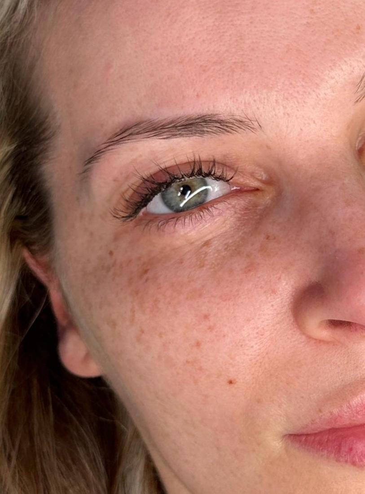
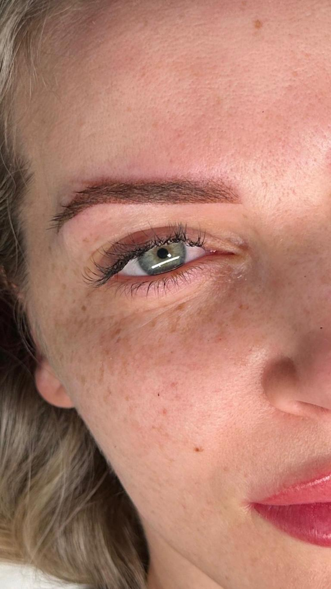

Die meisten Fragen bekomme ich nicht vor dem Termin, sondern danach. Meistens zwischen Tag 10 und Tag 14, mit dem Satz: „Ist die Farbe jetzt weg?“
Nein, ist sie nicht. Pigmentierte Brauen durchlaufen eine Abheilung in mehreren Phasen, und jede sieht anders aus. Wenn du vorher weißt, was kommt, bleibst du entspannt. Klick dich durch die Phasen, die Grafik zeigt dir, was mit der Braue jeweils passiert.
Tag 0: kräftig, scharf, leicht gerötet
Wenn du aus dem Studio gehst, sind deine Brauen deutlich dunkler und kantiger als das spätere Ergebnis. Die Haut um die Braue ist leicht gerötet und etwas geschwollen.
Das ist gewollt: Ein Teil des Pigments geht in der Abheilung wieder verloren. Was du jetzt siehst, ist nicht das Endergebnis.
Tag 1 bis 3: noch dunkler als erwartet
In den ersten Tagen wirkt die Farbe oft sogar noch intensiver. Die Haut bildet eine feine Schutzschicht über dem Pigment, und die liegt wie ein dunkler Film auf der Braue.
Die Rötung lässt nach, manchmal spannt es ein wenig. Halte dich in dieser Zeit genau an die Pflegehinweise, die du von mir mitbekommst, und fass die Brauen so wenig wie möglich an.
Tag 4 bis 10: die Haut schuppt sich
Jetzt löst sich die oberste Hautschicht in feinen Schüppchen. Das kann jucken. Bitte nicht kratzen, reiben oder abzupfen, denn mit einer zu früh gelösten Schuppe geht auch Pigment verloren und es entstehen hellere Stellen.
Die Braue sieht in dieser Phase ungleichmäßig aus, an manchen Stellen dunkler, an anderen schon heller. Lass sie einfach in Ruhe.
Tag 10 bis 21: „Ist die Farbe weg?“
Die Schuppen sind ab, und plötzlich wirken die Brauen blass, fast verschwunden oder fleckig. Viele nennen das „Ghosting“. Hier kommen die meisten besorgten Nachrichten.
Der Grund: Über dem Pigment hat sich frische, noch milchig wirkende Haut gebildet. Das Pigment ist darunter, es ist nur noch nicht klar zu sehen. Jetzt hilft nur Geduld.
Woche 3 bis 4: das echte Ergebnis zeigt sich
Die neue Haut wird klarer, und die Farbe „blüht“ wieder auf. Jetzt siehst du zum ersten Mal, wie deine Powder Brows wirklich aussehen: weicher als am ersten Tag, mit einem sanften Übergang von vorne nach hinten.
Kleine Lücken oder etwas hellere Stellen sind in diesem Moment normal. Genau dafür gibt es die Nachbehandlung.
Woche 4 bis 6: die Nachbehandlung
Nach vier bis sechs Wochen schauen wir uns das abgeheilte Ergebnis gemeinsam an. Wir verdichten die Farbe dort, wo die Haut mehr Pigment abgegeben hat, und gleichen Feinheiten in der Form aus.
Danach beginnt eine zweite, meist kürzere und mildere Abheilung. Erst nach dieser Runde ist deine Braue wirklich fertig. Die Nachbehandlung kostet bei mir 50 €, alle Preise stehen auf der Preisseite.
Was du in der Abheilung tun und lassen solltest
Die genaue Pflege bekommst du nach dem Termin schriftlich von mir mit. Diese Grundregeln gelten für fast alle Brauen-Pigmentierungen:
- Nicht kratzen, nicht zupfen. Schuppen fallen von allein ab, und mit ihnen sonst auch Pigment.
- Keine Sonne und kein Solarium. UV-Licht hellt frisches Pigment schneller auf. Später schützt eine Kappe oder Sonnencreme rund um die Brauen.
- Kein Make-up auf der Braue. Bis alles abgeheilt ist, bleibt die Stelle frei.
- Sauna, Schwimmbad und schweißtreibender Sport sollten in den ersten Tagen der Abheilung Pause haben. Wie lange genau, besprechen wir beim Termin.
- Keine Peelings und Wirkstoffe wie Retinol oder Fruchtsäure direkt an den Brauen, solange die Haut heilt.
- Bei Fragen lieber einmal mehr schreiben. Ein Foto per WhatsApp und ich sage dir, ob alles normal aussieht.
So sieht das in echt aus
Hier zwei Beispiele aus meiner Arbeit: eine Kundin vor der Behandlung und direkt danach. Du siehst gut, wie kräftig die Brauen am ersten Tag wirken.


Weitere Ergebnisse, auch abgeheilte, findest du unter Meine Arbeit. Alles zur Behandlung selbst steht auf den Seiten zu Powder Brows und Ombré Brows.
Häufige Fragen zur Abheilung
Ja. Zwischen etwa Tag 10 und Tag 21 liegt frische, noch milchige Haut über dem Pigment. Die Brauen wirken dann blass oder fleckig. Nach drei bis vier Wochen kommt die Farbe sichtbar zurück.
Deutlich heller und weicher als am ersten Tag. Wie viel genau, hängt von deiner Haut ab: Ölige Haut gibt meist mehr Pigment ab als trockene. Deshalb gehört die Nachbehandlung nach vier bis sechs Wochen fest dazu.
Die Nachbehandlung findet nach vier bis sechs Wochen statt, wenn die Haut vollständig abgeheilt ist. Sie gleicht hellere Stellen aus und verfeinert die Form. Erst danach ist das Ergebnis gleichmäßig und hält entsprechend lange.